OPERAÇÃO: COLD ORE
DE: CENTRO DE COMANDO TÁTICO (OVERLORD)
PARA: ESQUADRÃO GHOST
LOCALIZAÇÃO: MOUNT HODGSON, AUROA
>> UPLINK SEGURO ESTABELECIDO...
Senhores, a Inteligência confirmou nossos piores temores. O inimigo ativou um complexo logístico focado na extração e transporte de minérios essenciais para a fabricação em massa de drones autônomos. A cadeia logística de "Cold Ore" já está operando a todo vapor em um dos cumes mais hostis de Auroa.
Vocês serão inseridos na face congelada da cordilheira, à sombra de uma gigantesca ponte metálica. O frio cortante será o menor de seus problemas: bloqueios de sinal pesados naquela altitude inutilizaram todo o suporte de drones e mapeamento aéreo da equipe no momento da queda.

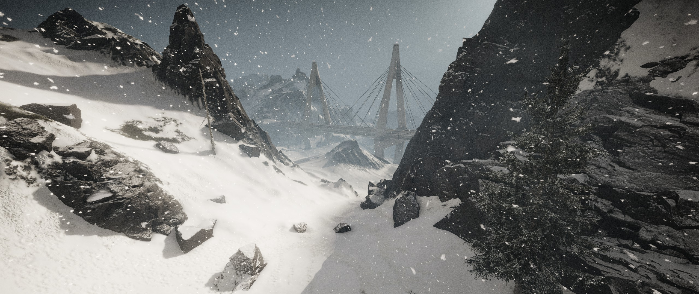
Se quiserem "olhos no céu" durante a incursão, terão que invadir a zona de testes montanhosa por conta própria e montar um equipamento a partir de componentes sobressalentes deixados nas antigas estações da Skell Tech. A escolha é de vocês: percam tempo recuperando os sensores, ou executem a operação inteira completamente cegos.
Sua missão possui duas frentes críticas. A primeira é investigativa: o processamento pesado e irresponsável da Sentinel causou um vazamento químico severo na região montanhosa. Precisamos que rastreiem esse fluxo de contaminação e coletem dados de toxidade nas principais fontes de água que cruzam as instalações.
A segunda frente é sabotagem pura. O alvo principal são as três instalações que formam a espinha dorsal logística do minério. O material que sai dessas correias está alimentando diretamente a linha de montagem das máquinas que a Sentinel usa para nos caçar. Vocês devem descer a montanha, invadir os complexos, paralisar as esteiras e destruir o maquinário. Cortem a matéria-prima na fonte. Adicionalmente, se encontrarem inteligência militar ou diagramas de armamento com os oficiais locais, recuperem como alvo de oportunidade.
// OBJETIVOS PRIMÁRIOS
- AMOSTRAS DE ÁGUA (SKELL TECH): Coletar dados de toxidade nos 3 focos de vazamento:
- Reservatório Principal: Localizado dentro do Complexo de Extrações.
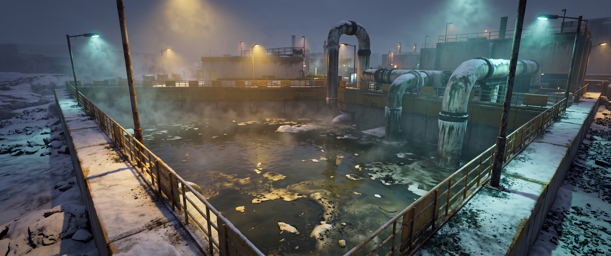
Amostra 01Área Industrial (Reservatório) - Lago Alice: Imediatamente a Leste do Complexo de Extrações.
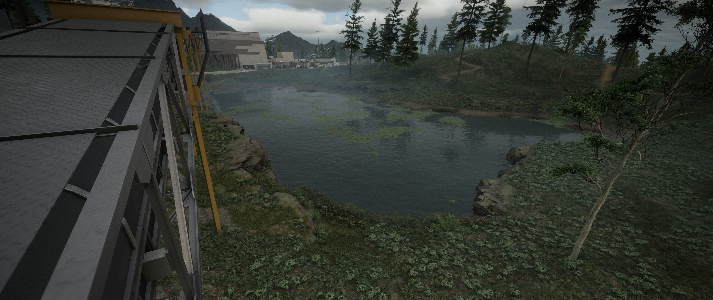
Amostra 02Margem do Lago Alice - Dove Stream: Imediatamente ao Sul da Mina do Pico Bald.
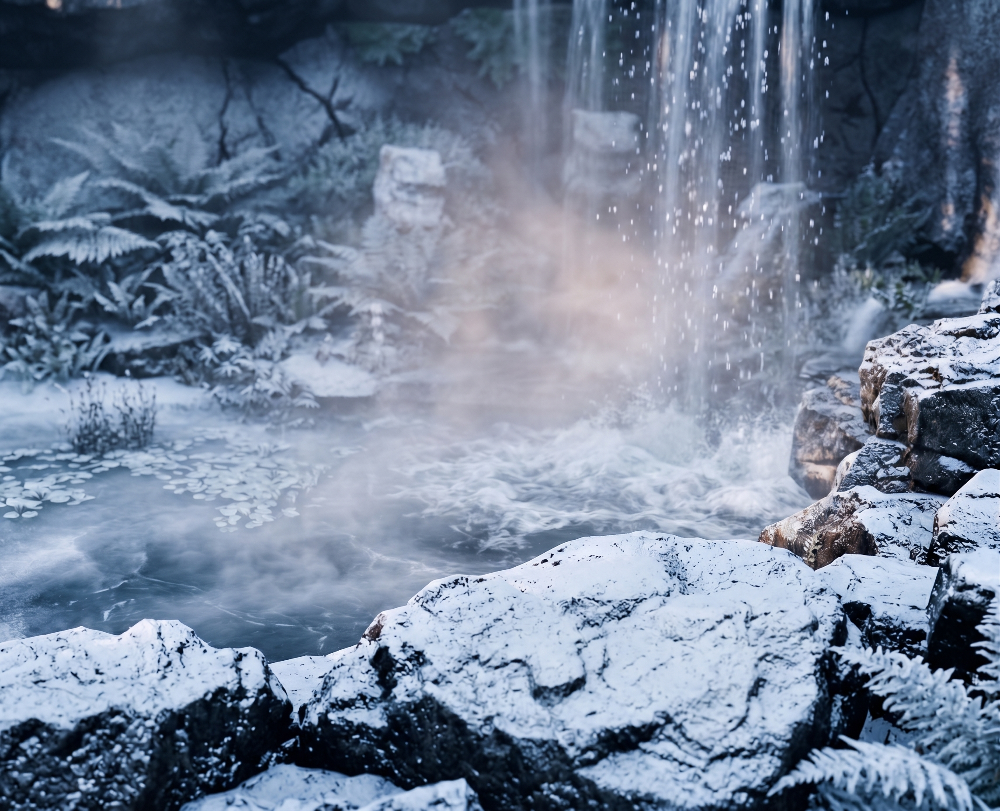
Amostra 03Corredeiras (Dove Stream)
- Reservatório Principal: Localizado dentro do Complexo de Extrações.
- SABOTAGEM LOGÍSTICA (COLD ORE): Destruir e inutilizar a infraestrutura de extração
inimiga em três áreas distintas:
- Mina Vale Silent: Instalar C4 nas 5 esteiras transportadoras e na antena de comunicação.
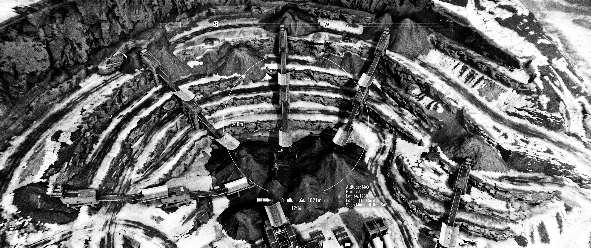
TopografiaMina Vale Silent 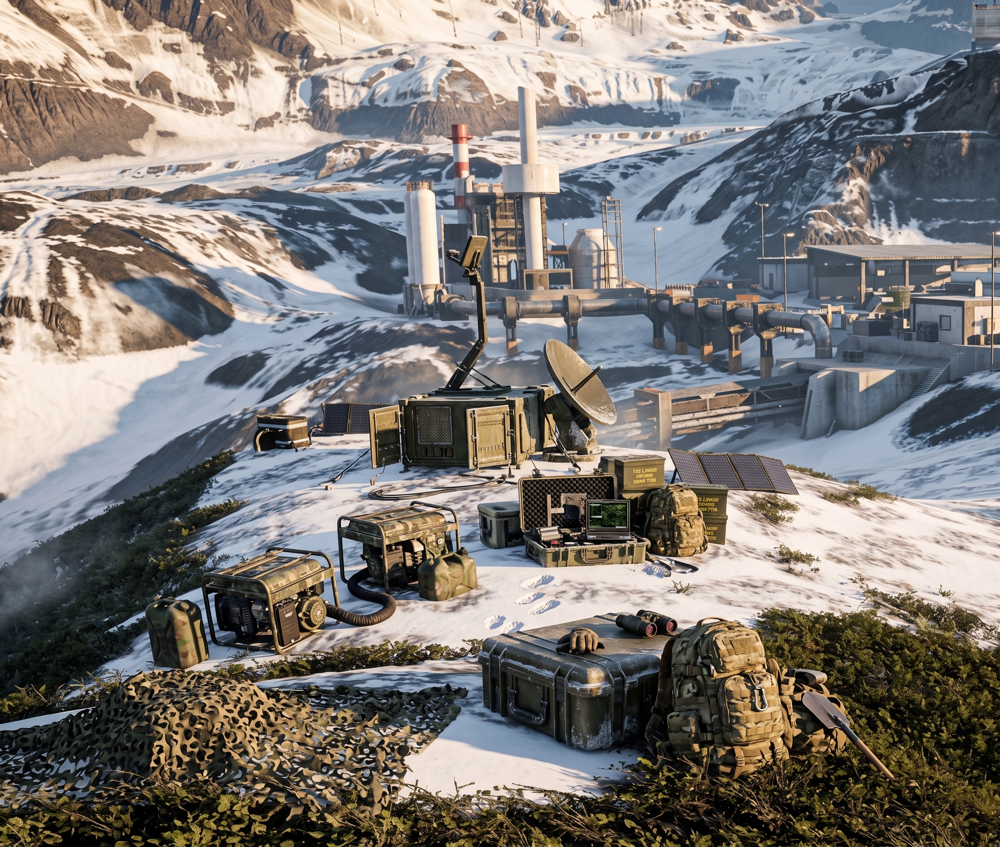
Alvo PrimárioAntena de Transmissão - Complexo de Extrações: Destruir os 2 motores primários e interceptar o painel de controle.
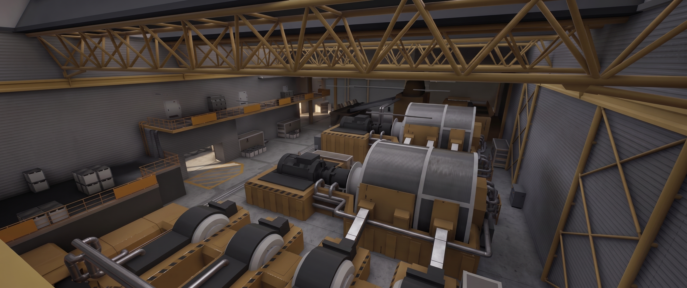
Vista IsométricaComplexo de Extrações 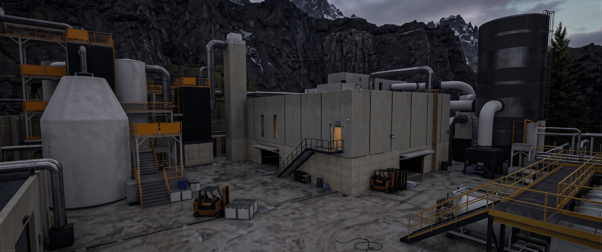
Anexo de ControleEdifício Secundário 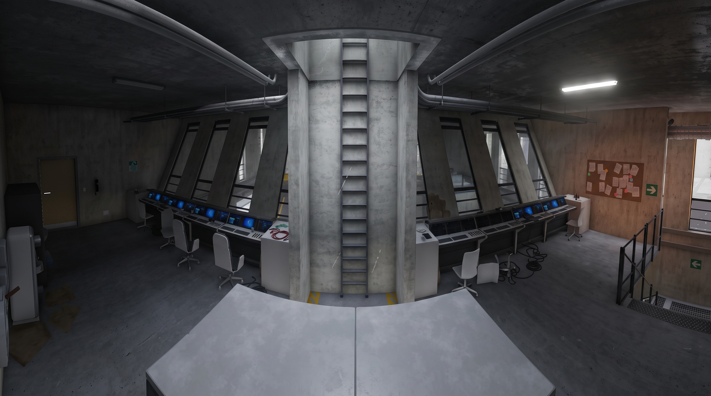
Alvo PrimárioPainel Eletrônico Mestre - Mina Pico Bald: Eliminar a infraestrutura destruindo 10 tambores inflamáveis e 2 silos de sílica.
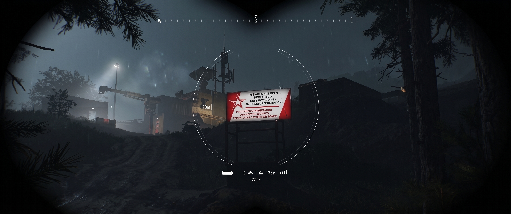
TopografiaMina Pico Bald 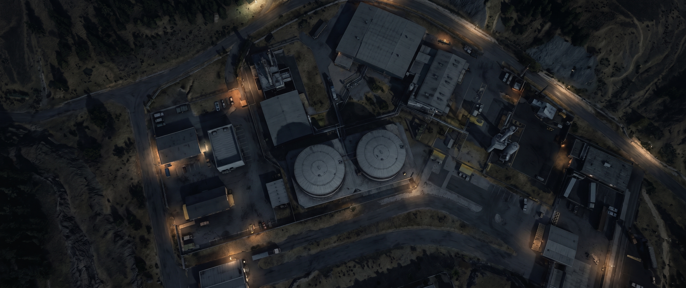
Alvo PrimárioSilos de Sílica 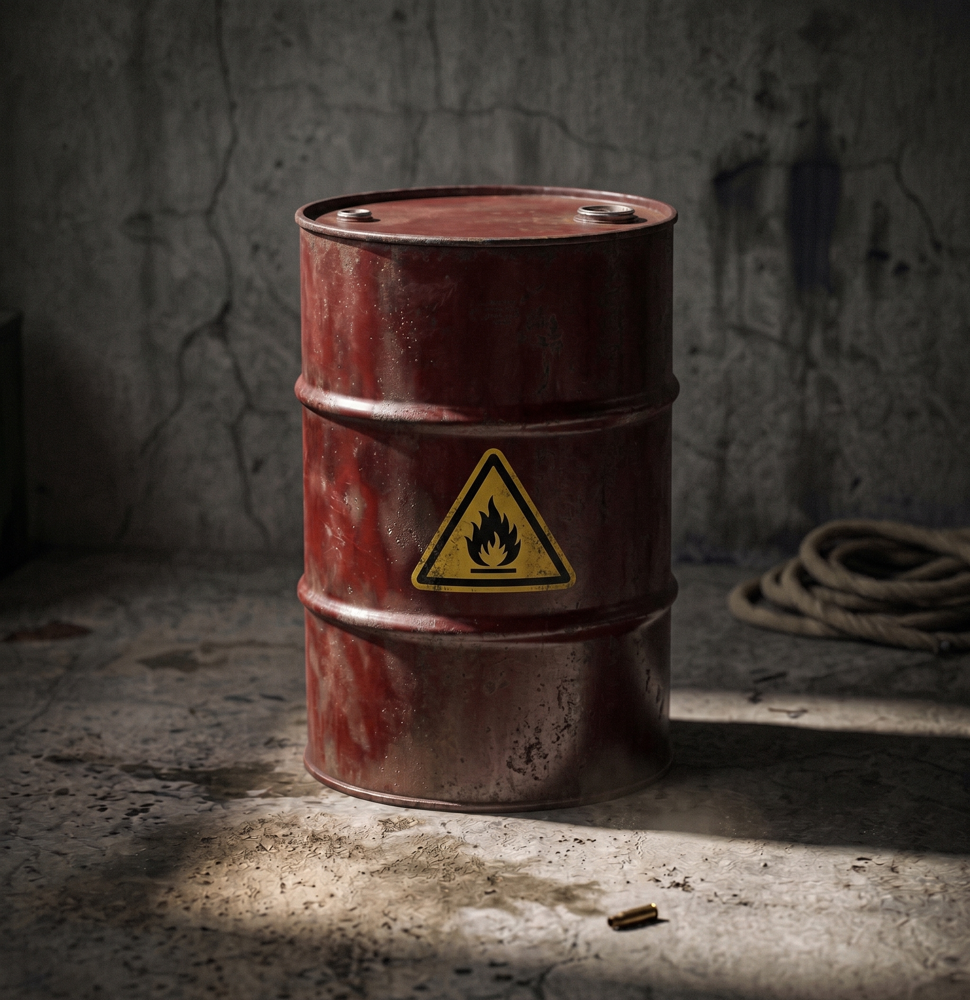
Alvo PrimárioTambores Inflamáveis 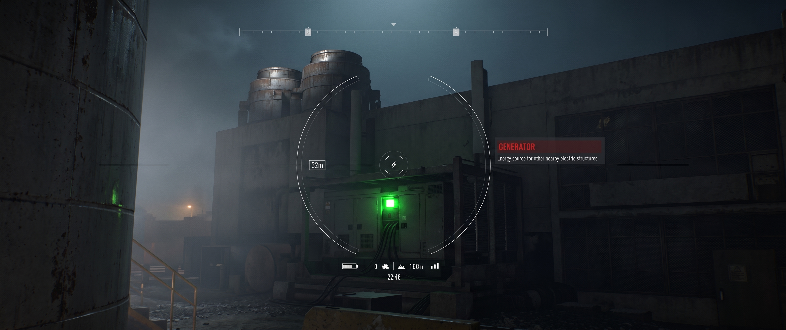
Alvo TáticoGerador Motorizado
- Mina Vale Silent: Instalar C4 nas 5 esteiras transportadoras e na antena de comunicação.


// OBJETIVOS SECUNDÁRIOS (OPCIONAIS)
- ESTAÇÃO W041 E LAGO FORTUNE: Para reestabelecer suporte de drones, recuperar 4 peças
sobressalentes (Bateria, Hélices, Sensores e Carcaça) na região inicial.
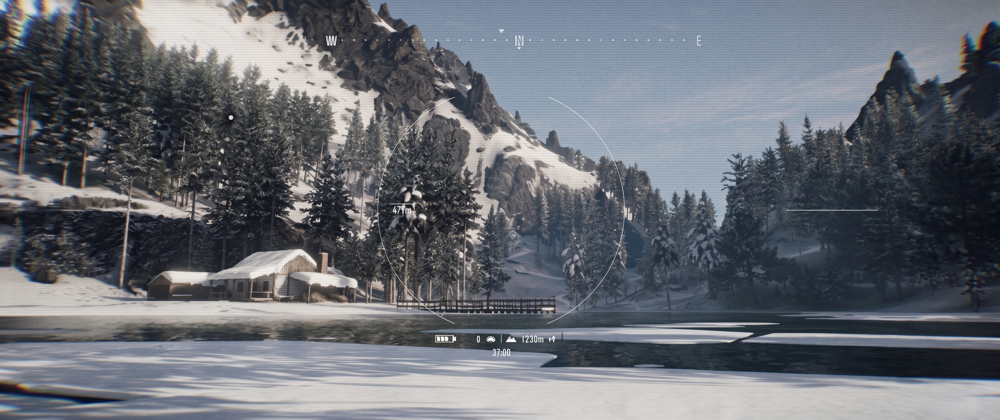
Peça 01Baterias do Drone 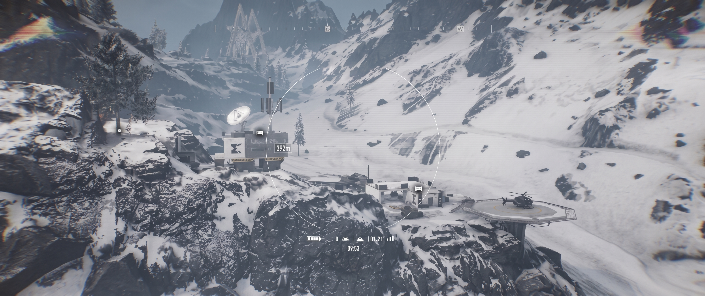
Peças 02 e 03Carcaça e Hélices 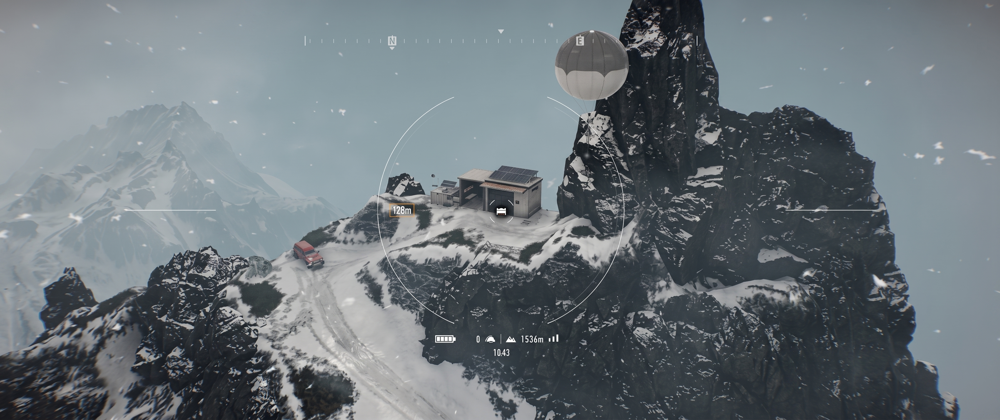
Peça 04Sensores Ópticos - Overlord: Diagramas do drone Murmur transmitidos. A
calibração exige estabilidade. Satélites apontam um Bivaque seguro entre a Mina Vale Silent
e o Complexo de Extrações Químicas.
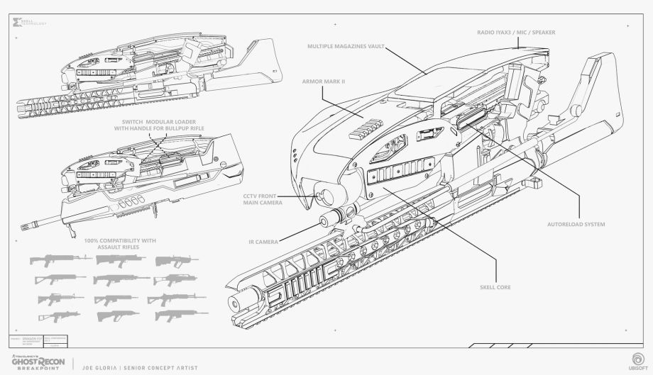
Documento TécnicoDiagrama de Montagem 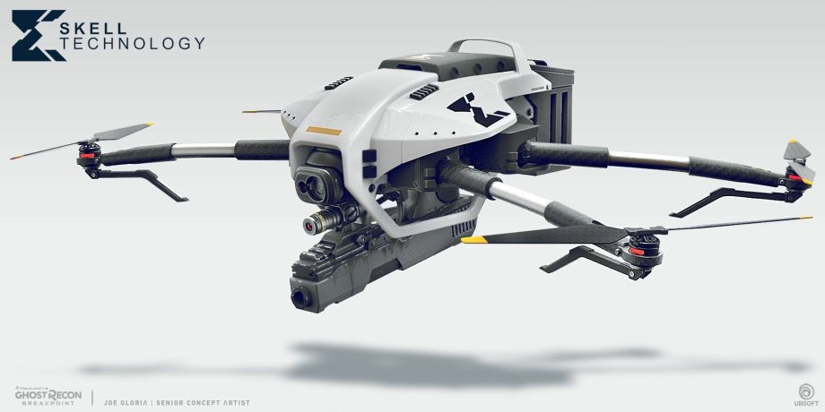
Projeção VisualDrone Montado
- Overlord: Diagramas do drone Murmur transmitidos. A
calibração exige estabilidade. Satélites apontam um Bivaque seguro entre a Mina Vale Silent
e o Complexo de Extrações Químicas.
- DIAGRAMA DE ARMAMENTO: Localizar e recuperar o diagrama (blueprint) de um fuzil de
precisão de última geração na Mina Pico Bald para viabilizar sua produção em série no centro de
comando.
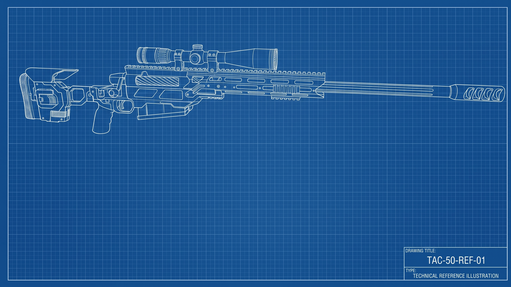
Material ConfidencialDiagrama de Rifle de Precisão


// PROTOCOLO DE EXTRAÇÃO (EXFIL)
A extração só será autorizada após a confirmação da destruição da infraestrutura logística inimiga.
- PONTO DE ENCONTRO (RV): Bivaque Serrania STAG
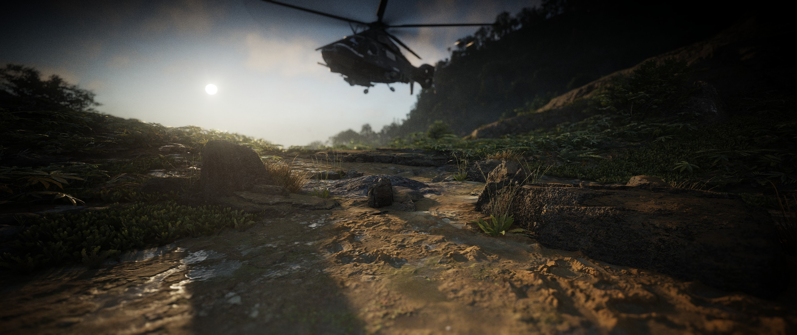
Ponto de Encontro (RV)Bivaque Serrania STAG